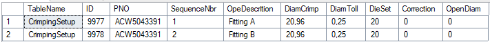
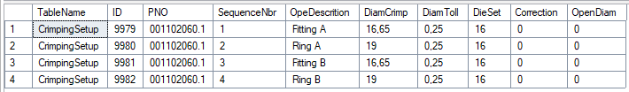
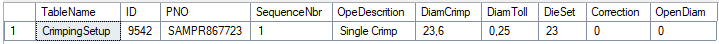
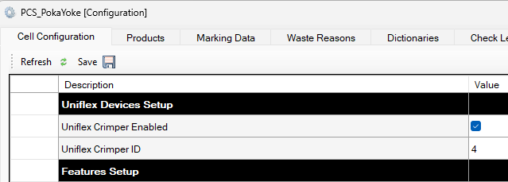
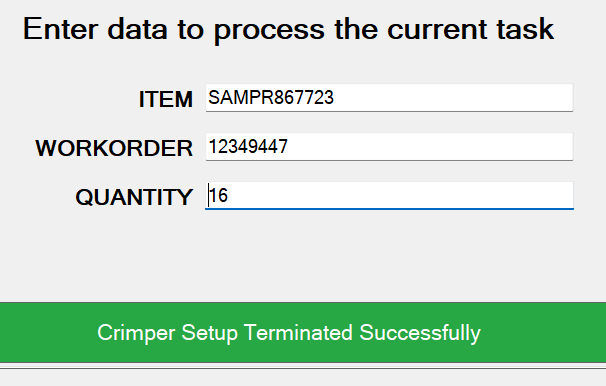
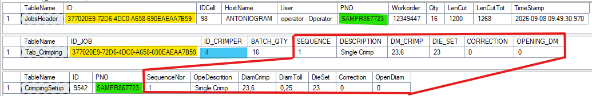
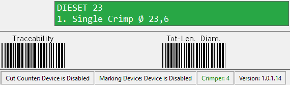
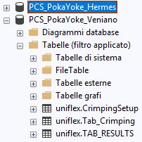

Uniflex crimper integration: where we stand and what is missing
The project has been on hold since January 2026. The Uniflex machines, with the crimper software completed, are at Hermes but have never been tested against the PCS. On the PCS side the core of the quality control is still missing: reading back the crimping results when the work order is closed.
Data exchange through the database, no direct connection
PCS and crimper do not talk to each other over serial or network: they exchange data through two tables in the uniflex schema on SQL Server. What ties the two worlds together is the ID_JOB, the GUID of the PCS job that the crimper keeps and writes back onto the results.
On WO/PNO/QTY it clears the table for its own ID_CRIMPER and writes the crimping sequences of the part number.
Configures itself with the parameters received, tells the operator which die set to fit (DIE_SET) and guides them through the crimps in the planned order — one complete piece at a time (one-piece flow).
One record per step: peak pressure, PFM — Pressure Force Monitoring, the machine's pressure and force control —, ManualScrap and SEQUENCE. Read by Power BI and, at WO closing, by the PCS.
The specification covers three assembly cases. Each one results in a different number of rows in the part number’s CrimpingSetup master data, which the PCS then copies into Tab_Crimping when the job starts.
Standard assembly — two fittings
One crimp per side: two rows, sequences 1 and 2, same diameter and same die set. In the example, Fitting A and Fitting B at ∅ 20.96 with die set 20.

Multi-step with sleeves
Fitting and sleeve on both sides: four rows alternating, performed in the order given by SequenceNbr. The two elements have different diameters — ∅ 16.65 for the fittings and ∅ 19 for the sleeves in the example — so the machine changes parameters at every step, on the same piece.

Hose with a single crimped fitting
One operation only: one row. This is the part number used in the examples throughout this document, ∅ 23.6 with die set 23.

How PCS and crimper work together, from job start to WO closing
One preliminary phase, carried out once when the cell is commissioned, and five production phases. Each one shows who acts — operator or application — and on which side, with the effect on the data on the right. The phases are numbered because the order is binding: the crimper cannot start before the PCS has written the setup, and the WO cannot be closed before the results have come back.
PCS setup
PCS · one-off- ConfigurationIn the PCS configuration form the Uniflex feature is enabled and the identifier of the crimper attached to the cell is declared. Each cell is enabled for one machine only: that number is the ID_CRIMPER the PCS will use to filter and rewrite its own rows in the exchange table.—

Job start
PCS- OperatorDeclares Work Order, PNO and the quantity to produce.—
- ApplicationLooks the PNO up in the crimping master data.reads CrimpingSetup
Warns the operator that the crimping data is missing: the machine will have to be set up by hand. The job goes on without guidance from the crimper.
To be confirmed with Hermes: the blocking code exists but is disabled.Generates the job ID_JOB and prepares the crimping rows of the part number, one for each planned operation.

Handing the setup to the machine
PCS- ApplicationDeletes the existing records for its own ID_CRIMPER and writes the sequence of the new job. The table always holds the current job of that cell, and nothing else.writes Tab_Crimping
- ApplicationShows the operator the die set (DIE_SET) and the programmed sequence, so that they can be checked against the machine.—
Every row carries ID_JOB, BATCH_QTY and the parameters of the single operation: SEQUENCE, DESCRIPTION, DM_CRIMP, CORRECTION, OPENING_DM, DIE_SET.


Pick-up by the crimper
Uniflex- ApplicationEvery 30 seconds it checks whether the ID_JOB in the table differs from the one currently loaded: if so, it reconfigures itself.reads Tab_Crimping
- OperatorAlternatively forces the load straight away with the acquisition button on the panel, without waiting for the automatic cycle.reads Tab_Crimping
Crimping the piece
Uniflex- OperatorPerforms the operations in the order shown on screen: one complete piece at a time, from sequence 1 to the last. This is the point agreed on 22/07/2025: no batching by die set.—
- ApplicationFor every operation it records one entry with the peak pressure reached and the sequence number.writes TAB_RESULTS
The machine reports the fault to the operator and records it, stating on which sequence it happened. The piece has to be scrapped: the sequence restarts from 1 on a new piece.
writes TAB_RESULTS with PFMWith the manual scrap button the operator declares the piece in progress as scrap even when the machine has detected nothing. Here too the sequence restarts from 1.
writes TAB_RESULTS with ManualScrapThe piece is good: the on-screen counters move up and the next piece begins. Once the planned quantity is reached the job-completed message appears, but the machine does not stop: the operator may carry on and the counters keep rising.
Closing the Work Order
PCS- OperatorWhen crimping is finished, selects Close Workorder on the PCS.—
- ApplicationReads back the results for its own ID_JOB and checks that the number of complete, error-free sequences matches the work order quantity.reads TAB_RESULTS
- ApplicationReports any discrepancy to the operator: missing crimps, pieces with a fault, manual scraps.—
What was agreed with Uniflex about the sequences
How the Tab_Crimping table is to be interpreted is the only point on which there was a real technical negotiation with Uniflex. The agreements are collected here with their source and date, so they can be recalled in the meeting without going back through the correspondence. The last specification sent out is Parker request Uniflex_crimper_4.pdf of 01/08/2025, extended verbally by the points of the 16/09/2025 meeting.
Jul. 2025
SEQUENCE dictates the order of execution
“It represents the sequence in which the crimping operations must be performed”. The number is not an identifier: it is the order in which the operator must carry out the crimps on the piece.
21/07/2025
Uniflex proposes a batch workflow
“Our current system is more suited for a mass production workflow. If there is a hose with two different fittings on each side, the workflow would first crimp all Fitting A in the batch... Would this workflow also be interesting or even possible for you?”
22/07/2025
Parker requires one-piece flow
“In Parker even in case of mass production we always produce according to 1 piece flow (multistep or single step): produce one complete assembly per time... so the proposed workflow is not suitable for us.” The machine must therefore run the whole sequence on one piece and restart from 1 on the next, changing setup at every step instead of grouping by die set.
Jul. 2025
Three scenarios with sample tables
Case A — standard assembly, two fittings: 2 rows. Case B — multi-step with sleeves: 4 rows alternating FITTING / RING, ordered by SEQUENCE. Case C — hose with a single crimped fitting: 1 row.
Jul. 2025
On PFM the sequence restarts from 1
“We expect the next crimping sequence number will return to 1”. The piece is abandoned, the counter of pieces with a problem goes up, and the operator starts again from the first step on a new piece.
Jul. 2025
Counters and on-screen messages
Good pieces, pieces with a problem and total steps; expected values BATCH_QTY and MAX(SEQUENCE) × BATCH_QTY. Job-completed message when the good pieces reach BATCH_QTY; piece-to-be-checked message on PFM.
29/07/2025
The job does not close by itself
“We want to leave the chance to the Uniflex crimper to go on crimping and counting, unless the operator decides to conclude the job.” Once the quantity is reached the machine warns but does not stop: the counters carry on. This is why the recorded crimps can exceed the nominal expected figure.
01/08 and 16/09/2025
Manual scrap by the operator
First as a digital button on the crimper panel “to allow the operator to scrap a piece in case the machine does not see that there is a defect”, then as the ManualScrap column in TAB_RESULTS.
Jul. 2025
One record for every crimping step
The crimper writes one record per step into TAB_RESULTS with a single pressure value, the peak one, and in case of a problem reports in SEQUENCE the step on which it occurred.
What has already been delivered
Writing the job out to the crimper
SetupUniflexCrimper() in Form02JobInfo: reads CrimpingSetup for the PNO, clears and rewrites Tab_Crimping with ID_JOB and BATCH_QTY, with on-screen messages and the outcome written to the log.
Data model and DB script
EF entities Tab_Crimping and CrimpingSetup; creation script for the uniflex schema, handed over to Uniflex on 27/10/2025 and used by them as a development reference.

Crimper software
Declared complete and tested in house by Uniflex; the machines have been shipped to Hermes. Counters for good pieces / pieces with a problem / total steps, job-completed and PFM messages, manual scrap button: all to be verified in the field.
What is missing to close the project
Verifying the crimps when the WO is closed
This is the blocking requirement of the agreed simulation: when the work order is closed the PCS must read TAB_RESULTS for the ID_JOB, compare the number of crimps performed against MAX(SEQUENCE) × BATCH_QTY and check that no PFM occurred. Today the TAB_RESULTS entity does not exist in the code: it has to be added to the EF model, and the whole checking, blocking and messaging logic has to be written.
PCS ↔ crimper integration test
Never carried out. The machines left Veniano before the trial. The three cases (A, B, C), the counters, the PFM and manual scrap handling and the consistency of the data across the two tables all need to be verified.
The uniflex schema on the Hermes database
It only exists on PCS_PokaYoke_Veniano. On Hermes the schema has to be created, the productComponents migration applied and the crimping master data loaded.
Code alignment
The Uniflex branch starts from master 1.0.1.14, the very version running at Hermes: the two baselines match and the integration is straightforward. What needs clarifying instead is whether Hermes also expects the features developed later — user management, alternative part codes, second diameter, multiple operator — which live on 1.0.2.x branches that were never released and are therefore not in production there today.
Web portal for master data management
Today CrimpingSetup can only be populated through Excel/SQL by the developer. Proposal: a web application with Active Directory login and two groups (read-only / read-write), CRUD on the configuration tables that can currently be edited only from the PCS or the database, plus Excel export and re-import for bulk maintenance.
Two behaviours never formalised
What to do when a PNO has no crimping data, and how strict the block at WO closing must be. There is no documentation on either: these are the two points to settle in the meeting (see section 6).
Open questions for Hermes
Block at WO closing: how strict?
If crimps are missing or a PFM occurred, is the WO blocked outright, or can the shift leader force the closing with a recorded reason?
How to count manual scraps
Should pieces scrapped by the operator on the crimper (ManualScrap) be deducted from the expected quantity, or counted as missing pieces?
Answered Same behaviour as PFM: the piece is scrap to all effects, the sequence restarts from 1 and it does not count towards the good quantity.
PNO without crimping data
Does the job stop at the start, or does it run with a warning and leave the crimper in manual mode? Today the blocking code exists but is disabled.
PCS version running at Hermes
To be checked in order to size the merge: which version is in production today, and on which cells the crimper has to be enabled.
Confirmed Version 1.0.1.14, confirmed by Hermes and cross-checked in the sources: it is the version on master, the same one the Uniflex branch starts from. The two baselines match. Which cells to enable the crimper on is still to be decided.
Crimping master data: who owns it
Who holds the diameter, correction, opening and die set figures for the Hermes part numbers, and in what format they can be handed over for the initial load.
Uniflex documentation
A document describing the software changes, the implemented behaviours and the customisations made at our request should have been delivered together with the machines. Did it reach Hermes? It is the reference we need for the tests.